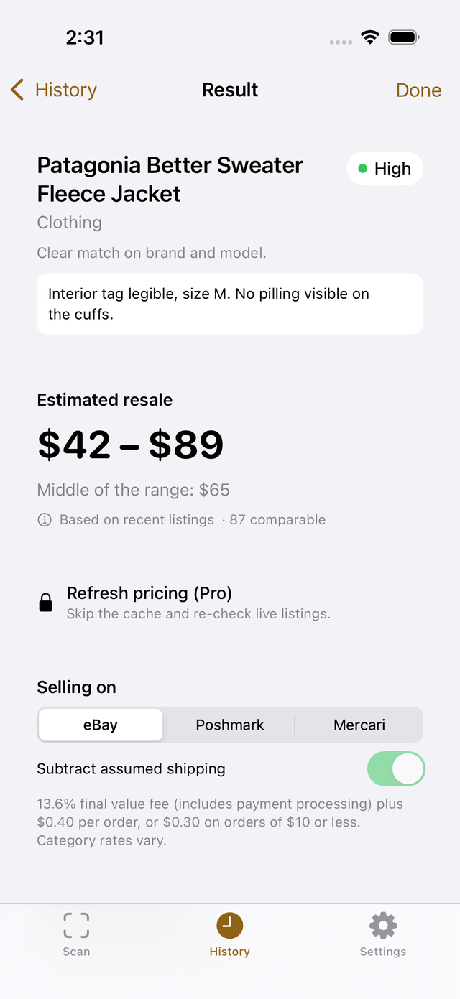
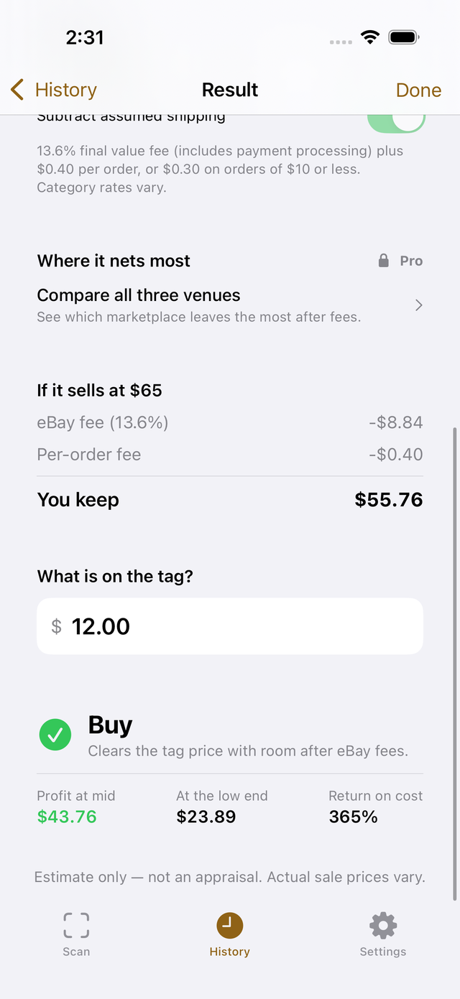
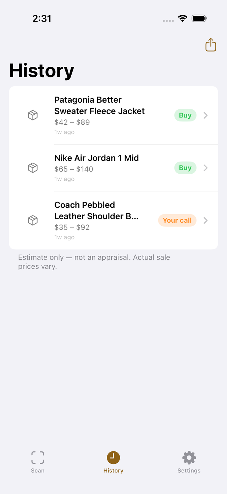

Know what it’s worth
before you buy it.
Photograph anything on the shelf. FlipCue estimates what it resells for, subtracts what the marketplace actually takes, and tells you whether the tag price leaves you a profit.
Download on the App Store iPhone · iOS 17 or later · 5 free scans, no card needed



How it works
Point and scan
Clothes, shoes, bags, home decor, books, collectibles. FlipCue reads the brand tag, the size and the fabric, because that is what apparel actually prices on. Anything with a barcode is read on your phone.
See the range
A resale range built from what comparable items are listed for right now, not one made-up number, with a confidence rating that tells you when to trust it.
Enter the tag price
FlipCue does the fee math for eBay, Poshmark or Mercari and tells you what you would actually keep. Buy, your call, or skip — in seconds, in the aisle.
Built around what resellers actually sell
Clothing first, because it is most of the volume. Then shoes, bags and accessories, home decor, books, and collectibles.
- Clothing
- Sneakers & shoes
- Handbags
- Accessories
- Home decor
- Kitchen
- Books
- Toys & collectibles
- Anything with a barcode
Try it free. Subscribe when it pays for itself.
Three free scans with the full result card — no account, no card. Then a 7-day free trial of Premium. One good flip covers it.
7 days free
Premium Weekly
$7.99/week
Free for 7 days, then $7.99 a week. Unlimited scans, full history, every fee preset. Cancel anytime.
Premium Monthly
$9.99/month
Unlimited scans, full history, every fee preset, billed monthly.
Pro Reseller
$29.99/month
Everything in Premium, plus refresh pricing against live listings, all three marketplaces costed side by side, and CSV export of your whole scan history.
Prices in USD. The free trial becomes a paid weekly subscription unless cancelled at least 24 hours before it ends. Subscriptions renew automatically unless cancelled at least 24 hours before the end of the period, and are managed in your Apple Account settings. Terms of Use · Privacy Policy.
What FlipCue will not do
- It will not guess a brand from styling. No visible maker’s mark means low confidence, and it says so.
- It will not call a listing price a sold price. Estimates come from current listings, and the app labels them that way.
- It will not appraise anything. It is a second opinion in the aisle, not a valuation.
- It will not keep your photos. A photo is sent to be identified and is not stored. There is no account and no login.
Questions
Where do the numbers come from?
From comparable items currently listed on eBay, found through eBay’s official API using the identification FlipCue makes from your photo. The range is the spread of those asking prices with outliers removed; the app shows how many comparables it found so you know how firm the number is.
Are these sold prices?
No, and the app never says they are. They are what sellers are asking right now. Sold prices are usually somewhat lower, which is one reason FlipCue judges the low end of the range as well as the middle.
Which fees does it subtract?
eBay’s final value fee plus per-order fee, Poshmark’s flat fee under $15 or 20% above it, and Mercari’s selling fee. Each table is checked against the marketplace’s own published schedule and dated in the app. Category and seller-status variations exist; check your own account for what you will actually pay.
Does it work without a signal?
Identification and pricing need a connection. Your history is kept on your phone, so a scan you have already done is always there to look at.
How do I cancel?
In the iPhone Settings app: tap your name, then Subscriptions. Cancelling there stops any future charge. Refunds are handled by Apple under their policies.
Is there an Android version?
Not yet. FlipCue is iPhone-only today.
Stop leaving money on the shelf.
Three free scans, then a 7-day free trial. No account needed.